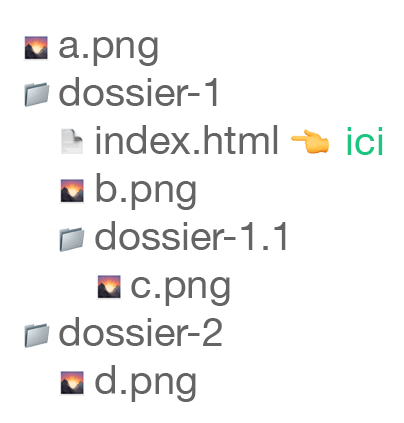

Peu importe le langage utilisé (HTML, CSS, JavaScript), la façon d'écrire un chemin vers un fichier externe (image, police, stylesheet ou JS) reste la même.
Un chemin est absolu lorsqu'il commence par un protocole (ex: https://).
À l'opposé, un chemin est considéré comme étant relatif lorsqu'il ne commence pas par un protocol (ex: https://).
Afin d'illustrer les différentes possibilités de chemin relatif, imaginons que nous sommes actuellement dans le fichier index.html dans l'arborescence ci-dessous 👇
Même dossier
Il est possible d'accéder à un fichier au même niveau que le fichier dans lequel nous sommes, simplement en spécifiant son nom.
Par exemple, pour accéder à l'image b.png 🌄 à partir du fichier index.html il est possible de faire:
Sous-dossier
Il est possible d'accéder à un fichier dans un sous-dossier en spécifiant le nom du sous-dossier en question suivi du nom du fichier.
Par exemple, pour accéder à l'image c.png 🌄 à partir du fichier index.html, il est possible de faire:
Dossier parent
Il est possible d'accéder à un fichier dans un dossier parent en indiquant qu'il faut remonter d'un dossier via la mention ../ suivi du nom du fichier.
Par exemple, pour accéder à l'image a.png 🌄 à partir du fichier index.html il est possible de faire:
Il est possible de remonter de plusieurs dossiers en enchainant les mentions ../.
Par exemple, pour remonter de deux dossiers: